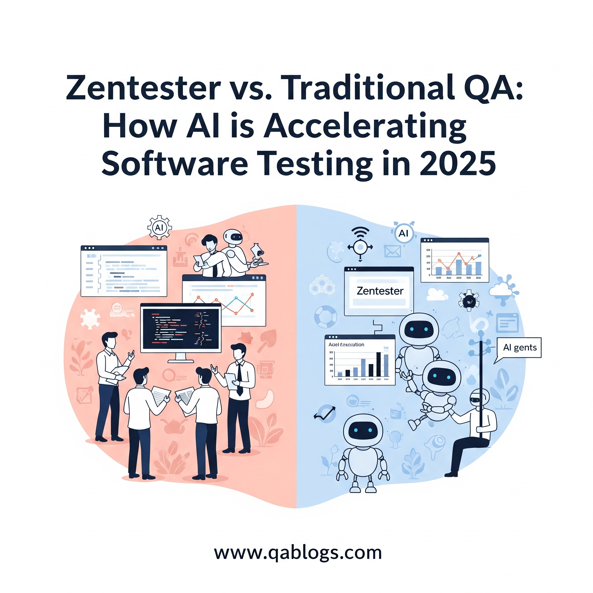

Zentester vs. Traditional QA: How AI is Accelerating Software Testing in 2025

Key Takeaways
- Zentester, by Zencoder, leverages AI to automate E2E testing, outperforming traditional QA in speed and efficiency.
- Traditional QA struggles with high maintenance, slow feedback, and scalability in 2025's AI-driven development landscape.
- Zentester features plain English scenarios, visual intelligence, adaptive tests, and CI/CD integration.
- AI accelerates testing by automating tasks, predicting defects, and enhancing coverage, aligning with 2025 QA trends.
In the rapidly evolving world of software development, Quality Assurance (QA) has always been a critical step to ensure applications meet user expectations and function flawlessly. However, traditional QA methods, often reliant on manual processes and script-heavy automation, struggle to keep pace with the accelerated development cycles of 2025. Enter Zentester, an AI-powered testing agent launched by Zencoder on June 10, 2025, that’s revolutionizing how teams approach software testing. This blog on QA Blogs compares Zentester with traditional QA methods, explores how AI is accelerating testing, and highlights what this means for QA professionals—all optimized for SEO to reach those eager to modernize their testing workflows.
Understanding Traditional QA: The Classic Approach
Traditional QA relies on a combination of manual testing and script-based automation to validate software. While this approach has been the backbone of QA for decades, it comes with significant challenges in today’s fast-paced development landscape.
Key Characteristics of Traditional QA
- Manual Testing: QA engineers manually execute test cases, often following detailed test plans to verify functionality, UI, and performance.
- Script-Based Automation: Tools like Selenium or Playwright are used to automate repetitive tests, requiring testers to write and maintain complex scripts in languages like JavaScript or Python.
- Phased Process: Involves multiple stages—requirements analysis, test planning, case creation, execution, and reporting—making it time-intensive.
- Feedback Loops: Developers send code to QA teams, who test and provide feedback days later, leading to costly context switching.
Limitations of Traditional QA in 2025
- Time-Consuming: Manual testing and script maintenance slow down release cycles, especially with the 10x increase in code generation driven by AI tools like GitHub Copilot.
- High Maintenance: Automated tests often break with UI changes, requiring constant updates and increasing maintenance overhead.
- Limited Scalability: As software complexity grows with trends like edge computing and IoT, traditional QA struggles to achieve comprehensive test coverage.
- Resource-Intensive: Requires skilled QA engineers to write scripts and analyze results, straining budgets and team capacity.
Traditional QA, while thorough, is increasingly outpaced by the demands of modern software development, where speed and agility are paramount.
Zentester: The AI-Powered Game Changer
Zentester, launched by Zencoder, is an AI-driven testing agent designed to address the shortcomings of traditional QA by automating end-to-end (E2E) testing. Unlike conventional tools, Zentester uses AI to interact with applications like a human user would, significantly accelerating the testing process while improving reliability.
Key Features of Zentester
- Plain English Instructions: Testers can define scenarios in natural language (e.g., “User logs in, adds item to cart, checks out”), eliminating the need for scripting expertise.
- Visual Intelligence: Zentester uses screenshots and DOM snapshots to navigate applications, clicking buttons and filling forms as a user would, ensuring realistic testing.
- Adaptive Test Maintenance: Tests automatically adapt to application changes, reducing flakiness and maintenance efforts.
- CI/CD Integration: Built on Playwright, Zentester integrates with existing frameworks like Selenium and supports continuous validation in CI/CD pipelines.
- Comprehensive Use Cases: Supports developer-led testing, QA acceleration, AI-generated code validation, test maintenance, and autonomous verification.
How Zentester Accelerates Testing
Zentester’s AI capabilities drastically reduce the time and effort required for testing. Early adopter Club Solutions Group reported that tasks taking days in traditional QA were completed in just 2 hours with Zentester, showcasing its potential to transform workflows.
Zentester vs. Traditional QA: A Head-to-Head Comparison
Let’s break down how Zentester stacks up against traditional QA across key dimensions:
| Feature | Traditional QA | Zentester | Winner |
|---|---|---|---|
| Speed and Efficiency | Manual testing and script creation are slow, often taking days. Feedback loops add further delays. | AI-driven automation executes tests in hours. CI/CD integration enables real-time validation. | Zentester |
| Ease of Use | Requires technical expertise to write and maintain scripts. | Plain English scenarios make it accessible to non-coders. | Zentester |
| Test Maintenance | Scripts frequently break with UI changes, leading to high maintenance costs. | Adaptive tests self-heal, adjusting to application changes. | Zentester |
| Test Coverage | Achieving comprehensive coverage is challenging, often leaving gaps. | AI generates comprehensive test suites, covering happy paths, edge cases, and backend responses. | Zentester |
| Scalability | Scaling requires more testers or scripts, straining resources. | Scales effortlessly with AI automation, handling increased testing needs. | Zentester |
| Cost-Effectiveness | High labor costs for manual testing and script maintenance. | Reduces labor and maintenance costs, though initial AI tool investment may be required. | Zentester |
Zentester clearly outperforms traditional QA in most areas, leveraging AI to address the inefficiencies of classic methods while aligning with 2025’s fast-paced development needs.
How AI is Accelerating Software Testing in 2025
Zentester is part of a broader trend where AI is transforming software testing. Here’s how AI, through tools like Zentester, is accelerating QA in 2025:
- Automation of Repetitive Tasks: AI handles test case generation, execution, and maintenance, freeing QA teams to focus on strategic tasks like exploratory testing.
- Predictive Analytics: AI analyzes code and user data to prioritize testing on high-risk areas, improving efficiency and defect detection.
- Self-Healing Tests: AI adapts tests to UI changes, reducing flakiness and ensuring tests remain relevant as applications evolve.
- Faster Feedback Loops: Integration with CI/CD pipelines enables continuous validation, providing developers with instant feedback and reducing delays.
- Enhanced Coverage: AI generates comprehensive test suites, covering scenarios that manual testers might miss, especially in complex systems like edge applications.
A Tricentis survey from 2025 notes that 80% of software teams now use AI for testing, underscoring its growing role in accelerating QA processes while maintaining quality.
Benefits for QA Teams
Adopting Zentester offers significant advantages for QA teams in 2025:
- Time Savings: Reduces testing cycles from days to hours, aligning with Agile and DevOps timelines.
- Improved Quality: Comprehensive coverage and adaptive tests catch more defects, enhancing software reliability.
- Collaboration: Plain English scenarios enable developers, testers, and non-technical stakeholders to participate, fostering a culture of quality ownership.
- Cost Efficiency: Minimizes manual effort and maintenance, optimizing resource allocation.
Challenges to Consider
While Zentester is a game-changer, QA teams should be mindful of potential hurdles:
- Learning Curve: Teams may need training to fully leverage Zentester’s AI features, especially if new to AI-driven testing.
- Dependency on Playwright: While it integrates with other frameworks, its core reliance on Playwright may require adjustments for some setups.
- Initial Investment: Adopting AI tools may involve upfront costs, though long-term savings often justify the expense.
To overcome these, start with Zentester’s public beta, explore its documentation, and gradually integrate it into your workflows.
The Future of QA with AI
Zentester represents the future of QA, where AI-driven tools take center stage. Zencoder plans to enhance Zentester by generating E2E scenarios directly from feature descriptions, further reducing manual effort. As AI evolves, we can expect even smarter testing solutions that predict user behavior, optimize coverage autonomously, and integrate seamlessly with development pipelines, making QA a proactive driver of quality rather than a reactive checkpoint.
How to Get Started with Zentester
Ready to accelerate your testing with Zentester? Here’s how to begin:
- Join the Public Beta: Access Zentester via Zencoder’s website and explore its features for free.
- Start Small: Begin with simple test scenarios in plain English to understand how Zentester interacts with your application.
- Integrate with CI/CD: Use Zentester’s pipeline support to enable continuous testing, ensuring instant feedback.
- Train Your Team: Leverage Zencoder’s resources to upskill your team on AI-driven testing best practices.
FAQs
What is Zentester?
Zentester is an AI-powered testing agent by Zencoder that automates E2E software testing using plain English scenarios and visual intelligence.
How does Zentester compare to traditional QA?
Zentester outperforms traditional QA in speed, ease of use, test maintenance, coverage, scalability, and cost-effectiveness by leveraging AI automation.
How is AI accelerating software testing in 2025?
AI automates test creation, execution, and maintenance, predicts defects, self-heals tests, and integrates with CI/CD pipelines, significantly speeding up QA processes.
Is Zentester suitable for all teams?
Yes, its plain English interface makes it accessible to both technical and non-technical users, though teams may need training to fully utilize its AI features.
Conclusion
Zentester is revolutionizing software testing in 2025 by addressing the inefficiencies of traditional QA with AI-driven automation. Its ability to accelerate testing cycles, improve coverage, and reduce maintenance makes it a must-have for QA teams aiming to keep up with modern development demands. As AI continues to reshape QA, tools like Zentester are paving the way for faster, more reliable software delivery. Don’t get left behind—explore Zentester today and transform your testing workflows for the future!
Stay ahead in QA with more insights at QA Blogs and share your thoughts on AI-driven testing!
Join Our Community of QA Professionals
Get exclusive access to in-depth articles, testing strategies, and industry insights. Stay ahead of the curve with our expert-curated content delivered straight to your inbox.
Nikunj Mistri
Founder, QA Blogs
About the Author